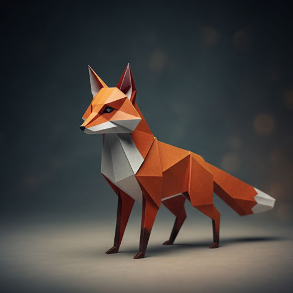

Origami comes from the Japanese words ori, meaning "folding", and kami, meaning "paper." It is the art of paper folding, which is often associated with Japanese culture. In modern usage, the word "origami" is used as an inclusive term for all folding practices, regardless of their culture of origin. The goal is to transform a flat, square sheet of paper into a finished sculpture by applying folding and sculpting techniques. Modern origami practitioners generally discourage the use of cuts, glue, or markings on the paper. Origami folders often use the Japanese word kirigami to refer to designs that use cuts.
This wonderful piece is our featured lesson for this month.

Spear-tailed Dragon
This lesson is taught by none other than the head of the Murakami House of Origami. It contains 5 mini videos on how to complete each step of the process. The Murakami House has been using ancient techniques that have been handed down within the family since the Endo period. Lessons:
Lessons:
This lesson contains bonus links to suppliers for materials used in this tutorial.
ENROLL NOW
Get this lesson today for only
$25
You will get immediate and lifetime access to all the videos in this lesson.
JOIN NOW
The basic origami folds can be combined in various ways to create intricate designs. The best-known origami model is the Japanese paper crane. In general, these designs begin with a square sheet of paper whose sides may be of different colors, prints, or patterns. Traditional Japanese origami, which has been practiced since the Edo period (1603-1867), has often been less strict about these conventions, sometimes cutting the paper or using nonsquare shapes to start with. The principles of origami are also used in stents, packaging, and other engineering applications.
Learn only from the masters of origami

Wiley Fox
In Japan, foxes symbolize intelligence associated with the Shinto
spirit Inari.
This particular origami is challenging to make but produces one of
the finest examples of the
Kitsami Origami style.
skill level

Regal Bloodhound
Bloodhounds have been part of humankind, especially in hunting.
In this lesson, we will learn to use two monochromatic paper colors
to produce a simple but effective
Tsumisiru effect.
skill level

Wise Owl
Owls have always been part of lore, and it isn't surprising that we
also find them very much in origami.
This lesson is famous for combining two different pieces into one
without the use of glue or adhesive.
skill level

Resting Lion
The king of the animal world finds its place among important origami
creations.
This particular example utilizes curled tips, popularized by the
renowned origami artist Shintzu Omahari.
skill level
Copyright © 2026. House of Origami
37 Jodoji Ishibashicho, Sakyo Kyoto,
606-8406, Japan
Web Design by Roncal Bernadeth